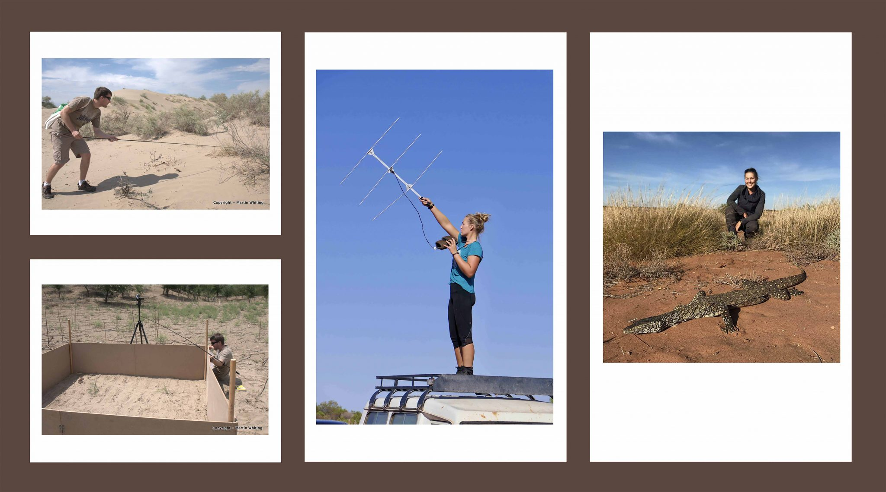
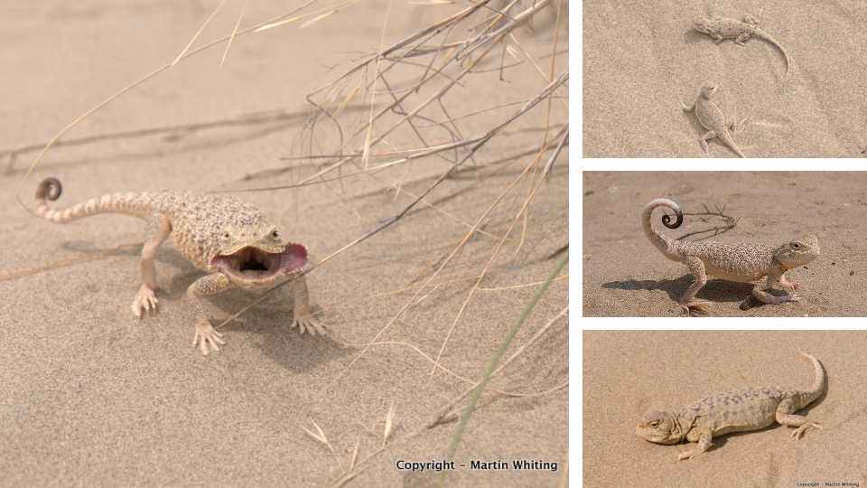

Animal communication
How visual, chemical and dynamic signals evolve, what information they carry, and how receivers use them.
Macquarie University · Sydney, Australia
We investigate the behaviour, ecology and evolution of lizards—from colourful signals and flexible minds to the origins of family living.

What we study
We combine fieldwork, experiments and comparative approaches, working mainly with lizards and occasionally with frogs, birds and other vertebrates.
How visual, chemical and dynamic signals evolve, what information they carry, and how receivers use them.
How lizards learn, solve problems and respond flexibly to social and environmental challenges.
How family living, cooperation, social complexity and parental care arise in vertebrates.

From field to lab
Our work ranges from long-term studies in Australia, Africa and Asia to controlled behavioural experiments in large, semi-natural enclosures and cognition facilities.
Research themes
We study sexual selection and complex displays, learning and brain evolution, family living and cooperation, and behavioural responses to changing environments.

People

Professor of Animal Behaviour and behavioural ecologist. Martin leads research on animal communication, cognition, social evolution and behavioural diversity in lizards.
Macquarie University profile →Publications
Current publication lists, downloadable papers and citation metrics are maintained through these profiles.
Lab news
How Jackson’s chameleons become brighter when predators are absent.
Research on quantity discrimination and behavioural flexibility in lizards.
What an extraordinary lizard tells us about egg-laying and live-bearing species.
Testing whether lizards can suppress an immediate response to solve a problem.
Contact